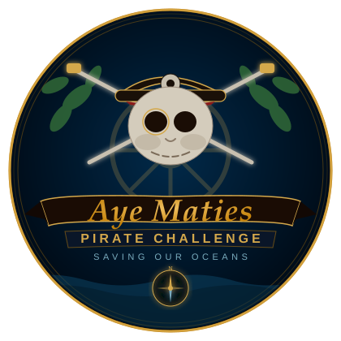

PA
Pia Alice Sekulic
Head of MarketingRead more

An immersive voyage where adventure meets purpose — uniting explorers, dreamers and changemakers to protect the oceans that connect us all.
Aye Maties was born from a simple belief: that adventure and responsibility can sail the same course. What began as a small band of ocean lovers has grown into a global pirate-spirited movement — turning curiosity about the sea into real, measurable change.
Every expedition, workshop and challenge we craft is designed with the same intention — to leave the water cleaner, the next generation more aware, and every guest forever changed by what lies beneath the surface.
— looking up from the deep, we remember what we are fighting for —
The ocean doesn't die all at once. It dies a little more, every day.
A young sea turtle swims thousands of kilometres — just like generations before her. A piece of plastic drifts by. To her, it looks like a jellyfish.
She is not alone. Every year, millions of tonnes of plastic enter our oceans — and, eventually, us.
The ocean doesn't need us. We need the ocean. The question isn't whether it will change — it's whether we act before living worlds become only memories.
Every year, millions of tonnes of plastic and waste enter our seas — choking reefs, poisoning marine life and unraveling the fragile balance that sustains our planet. Pollution doesn't stop at the shoreline; it travels with the current, reaching the most remote corners of the ocean.
Aye Maties exists to turn awareness into action. Every expedition removes real waste from real waters — and every guest leaves understanding that the fight against ocean pollution is one we can only win together.
Marine heatwaves have struck more than 80% of the world's reefs — home to a quarter of all known marine species.
The seas absorb roughly 90% of the planet's excess heat, pushing entire species toward the poles in search of cooler water.
An estimated 52 million tonnes of plastic enter the ocean every year — breaking down into trillions of microplastic particles found in fish, whales and human blood.
2026 may decide whether industrial mining is allowed to reach ecosystems we have barely begun to understand.
We measure ourselves not by how far we sail, but by how much lighter we leave the water behind us. Here's what we're steering toward.
Fund and launch a dedicated research-and-cleanup ship, doubling the number of guided expeditions each season.
Cut our own carbon and waste footprint in half, and partner with 50 coastal communities on restoration projects.
Grow our education programmes to reach 100,000 people — turning every guest into an advocate for the ocean.
Sail a fully carbon-neutral fleet, remove over 1,000 tonnes of ocean waste a year, and inspire a new generation of ocean guardians.
Click to plant coral and breathe life back into the ocean.
Join the crew. Become part of a movement that turns wonder into action — and the ocean's future into ours.
Aye Maties is carried by a small crew of sailors, filmmakers, divers and storytellers.
Keeps the ship, crew and every expedition running.
Sees the ocean through a lens.
Makes sure every voyage sets sail on time.
Digs into the science behind every mission.
At home below the surface.
Builds the look and feel of every shoot.
Chases light and life beneath the waves.
The High Seas Treaty, signed by over 60 nations, begins formal ratification. Conservationists call it the most significant marine protection agreement since UNCLOS.
Australian scientists report fifth mass bleaching event in eight years, with 65% of surveyed sites showing severe thermal stress as sea surface temperatures exceed records.
Corporate investment in verified plastic removal projects doubles year-on-year, with certified ocean-bound plastic credits now accepted by over 200 major brands.
A growing coalition backs a halt to seabed extraction pending full environmental impact studies, citing irreversible harm to poorly understood ecosystems.
Global replanting efforts exceeded 150,000 hectares in 2025, with Southeast Asia and West Africa leading programmes that sequester carbon and protect coastlines.
A peer-reviewed study finds microplastic concentrations in brain samples 30x higher than in other organs, intensifying calls for upstream plastic production limits.
Ocean footage & behind the scenes
"Aye Maties" (Font: "Ariston") is TM and IP of
Sail Wisely (Ireland) CLG
MASON HAYES & CURRAN
Barrow Street, Dublin 4, D04 TR29, Ireland
+353 1 614 5000 | MHC.ie
Represented by Claire Lord / Partner
AyeMaties@gmail.com
c/o Capt. Peter Brucha / Founder, Sail Wisely & Aye Maties
AyeMaties@proton.me
c/o Dr. Dino Stelzl / Director, Sail Wisely CLG @ Aye Maties
c/o Pia Alice Sekulic / Head of Department
c/o Capt. Peter Brucha
Jubilaeumstrasse 19
2345 Brunn/Geb., Austria